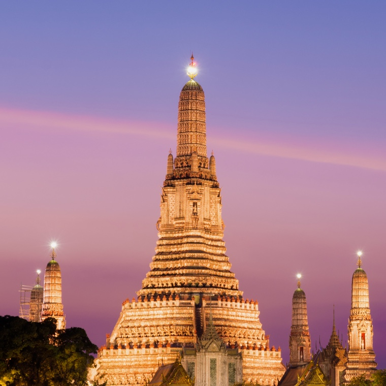

東京
去趟東京行，絕對少不了品嚐國民美食拉麵，各式湯頭、麵條種類、配料到秘傳配方，在這激戰中難分軒輊，各有各的擁護者；提到東京美食，不得不提及壽司，其中又以「江戶前壽司」而聞名，料理人精湛的技藝，將每一貫握壽司注入職人魂，嚐過一次便令人魂牽夢縈。
新加坡
新加坡是一個多元種族文化的移民社會，受馬來西亞、中華、印度、阿拉伯等文化影響，在建築方面亦有豐富多彩的文化表現。

曼谷
泰國一年一度的水燈節，素有「泰國最美節慶」之稱，除了河畔邊的水燈外，放天燈也是其中一大環節，水面與天上的大片閃爍燈火，營造出浪漫的氛圍。

胡志明市
越南斗笠以竹子做為骨架，再以棕櫚葉與竹葉編製而成。在緯度低且多雨的越南，著用斗笠的人很多，女性更會與輕柔飄逸的奧黛相互搭配。

馬尼拉
換個場景從馬拉提區登高一覽夜幕低垂的晚霞，欣賞夕陽緩緩沉入海裡，盡情享受濱海城市 - 馬尼拉的清新浪漫的美麗景緻！